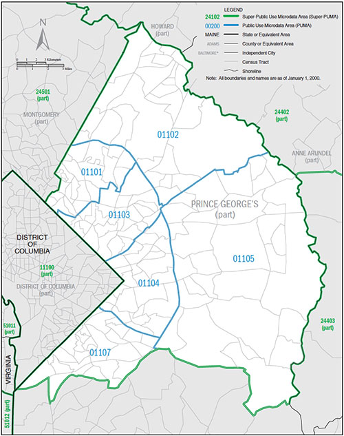
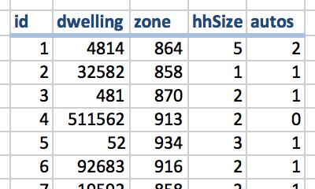

A synthetic population is a simplified microscopic representation of the actual population. Simplified, because not all attributes are included (for example hair color is deemed to be irrelevant for land use modeling, thus it is ignored). It is microscopic because every household and every person is represented individually. A synthetic population is not identical to the actual population, i.e. most residents will find a record in the synthetic population that matches themselves. Instead, the synthetic population matches various statistical distributions of the actual population, and therefore, is close enough to the true population to be used in modeling.
SILO works with four sets of synthetic populations that are stored in four different files:
| hh.csv | List of households |
|---|---|
| pp.csv | List of persons |
| dd.csv | List of dwellings |
| jj.csv | List of jobs |
The synthetic is generated by expanding Public Use Microdata Sample (PUMS) data. PUMS can be downloaded free of charge from the US Census Bureau and contains detailed records of surveyed households. As SILO commonly starts the simulation in the year 2000, PUMS 2000 data are used to create a synthetic population. The spatial resolution of PUMS data are zones called PUMA (Public Use Microdata Area, as shown on the right).
PUMS data are provided in two datasets. The 1% sample of all households has more detailed household characteristics but less spatial detail (green zones in graphic on the right, called Super-PUMA). The 5% sample of all households has less detail in household characteristics but more spatial detail (blue zones in graphic on the right, called PUMA). Since the household details in the 5% sample are sufficient for SILO, this dataset is chosen to increase spatial resolution.
PUMS data include an expansion factor that describes how many households of the actual population this record represents. For SILO's synthetic population, this expansion factor is used to create a complete synthetic population. For example, if a PUMS record has an expansion factor of 5, this record is added to SILO's synthetic popoulation and duplicated four more times. As expansion factors were calculated accordingly, the total population of the SILO's synthetic population matches the actual population in the study area.
PUMS datasets also provide information on persons of each household and the dwellings the households live in. By expanding the household records, synthetic persons and synthetic dwellings are created at the same time. Persons match the number of persons of the actual population. Dwellings, however, underrepresent the actual dwellings found in reality. This is because households were interviewed to create PUMS data. A vacant dwelling is not captured by the PUMS data.
To create a complete set of dwellings (occupied dwellings and vacant dwellings), an average vacancy rate is assumed exogenously. Vacant dwellings are added by randomly selecting existing dwellings from PUMS data and adding them without a resident. Vacant dwellings are added until the exogenously assumed vacancy rate is matched. As default values, SILO assumes the following vacancy rates. These values can be changed in the properties file file under the token ‹vacancy.rate.by.type›.
| Single family detached | SFD | 1% |
|---|---|---|
| Single family attached | SFA | 3% |
| Multi-family with 2, 3 or 4 dwellings | M234 | 5% |
| Multi-family with 5 or more dwellings | M5+ | 4% |
| Mobile homes | MH | 3% |
Dwellings need to be allocated from PUMA zones to model zones. Zonal data are used to proportionally allocate dwellings to zones. Ideally, number of dwellings by dwelling type are used for this allocation. If such data are unavailable, zonal population can be used as a proxy for dwelling allocation. The home location of households is defined by the location of their dwellings.
Workplace locations are disaggregated similarly. PUMS data provide work locations by PUMA zones, which are disaggregated proportionally to zones using zonal employment data.
The procedure described above creates a complete set of households, persons and dwellings. Jobs are created based on zonal employment data. Persons are connected to workplaces by drawing jobs located within the workplace PUMA zone specified for each worker in the PUMS data. To ensure that the number of workers in any given zone does not exceed the number of available jobs, "drawing without replacement" is applied for selecting jobs for every worker.
Currently, jobs are represented as independ jobs, and firms are not represented explicitly.

A synthetic population represents line by line every household individually.